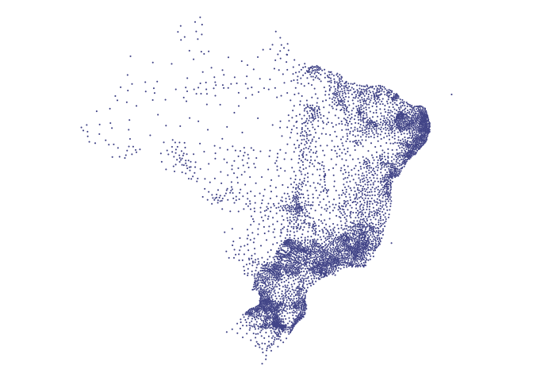

Esse pacote contém conjunto de bases de dados utilizadas corriqueiramente pela Associação Brasileira de Jurimetria.
Os dados incluidos são provenientes de fontes relacionadas ao Indíce de Desenvolvimento Humano das Ufs coletados a partir do Atlas do Desenvolvimento Humano, ao banco de dados do “Sistema de Estatísticas do Poder Judiciário”, Portaria N° 216 e bases de dados cartograficas.
O pacote fornece elevado processamento de dados, o objetivo é agregar dados de estrutura territorial do ranking do IDHM regional e nacional nas pesquisas e relatórios.
Você pode instalar a versão mais recente do {abjData} com:
Para instalar a partir do endereço de um dos repositórios você precisa ter o pacote remotes instalado.
# Para instalar pacote remotes install.packages("remotes") # Para instalar a versão GitHub (dev) remotes::install_github("abjur/abjutils")
| Base | Descrição |
|---|---|
cadmun |
Um conjunto de dados que contém os códigos de cadastro municipal. |
pnud_min |
TODO |
pnud_muni |
TODO |
pnud_siglas |
Um conjuto de dados que serve como glossário das siglas disponíveis. |
pnud_uf |
TODO |
Depois de instalado, basta carregar o pacote e chamar o conjunto de dados que deseja usar.
O pacote {abjuData} pode ser carregado como qualquer outro pacote de R:
glimpse(pnud_siglas) #> Rows: 237 #> Columns: 4 #> $ sigla <chr> "uf", "ufn", "codmun6", "codmun7", "nomemun", "espvida", "… #> $ nome_curto <chr> "Código da Unidade da Federação", "Nome da Unidade da Fede… #> $ nome_longo <chr> "Código da Unidade da Federação", "Nome da Unidade da Fede… #> $ definicao <chr> "Código utilizado pelo IBGE para identificação do estado."…
pnud_min%>% filter(idhm > 0.700) %>% ggplot() + geom_boxplot(aes(regiao, idhm_e), colour = "#102C68") + theme(legend.position = "none") + theme_minimal() + labs(title = "IDHM educação por Regiões", y = "IDHM", x = "Regiões")

O sistema de gerenciamento de conteúdo {abjData} é licenciado sob os termos da MIT + file LICENSE